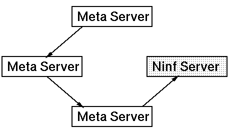
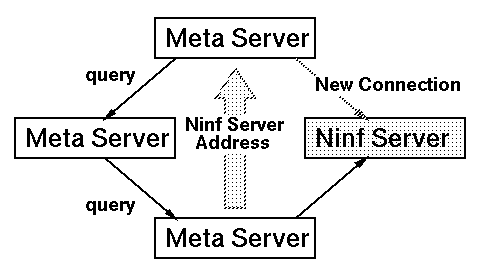

 <center> <H1>  メタサーバ間の情報交換  </H1> </center> <hr noshade width = 80% algn = "center"> <H2>

<table>
<td>
<h2>
On demand での検索
<li> 適切なNinfサーバを知らない場合、他のメタサーバに対して問い合わせをおこなう
<li> 問い合わせを受けたメタサーバも知らない場合にはさらにその問い合わせを
フォワードする
<li> 適切なNinfサーバを知っている場合には元のメタサーバにそのNinfサーバを教える
</td><td>

</td>
</table>
<table>
<td>
<h2>
<li> 問い合わせはhop数で自動的にexpireする <p>
<li> 問い合わせはユニークなIDをもち、重複してforwardされることはない
</td>
<td>

</td>
</table>

<br>
 <hr> <center><table><td><h2>　　　　　　　　　　　　　　　</td><td></td><td></td><td><h2><em>　　　　　　　HOKKE' 96 </td></table></center>

